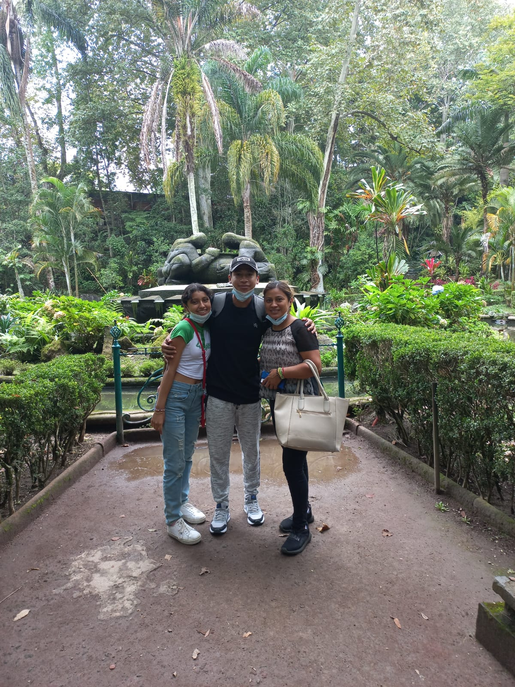

¡Bienvenido a mi página sobre mis hobbies!
Pasar Tiempo con mi Familia
Mamá y Hermana
Siempre me ha gustado estar cerca de mi familia, en especial de mi madre Fatima y mi hermana Melani, pues son las personas más cercanas a mi. Salir a estudiar de foraneo fue díficil en el aspecto de tener que dejar de verlos por largos periodos pero he ido acostumbrandome, aunque, sigo gustando de ir a verlos cada vez que pueda hacerlo.
Mi mamá siempre ha estado conmigo y ha sido una buena madre y ejemplo a seguir, se ha ganado todo mi cariño, mi amor y mi respeto por siempre estar para mi y mi hermana, por siempre sobresalir ante cualquier problema y siempre voy a estar agradecido por ese apoyo que siempre me proporciona.
Amigos
Siguiendo con el tema de la familia, muchas veces en la vida existen amigos que siempre estan en los momentos importantes de uno y considero que esos amigos támbien son familia, entonces quiero agradecerles por formar parte de mi vida a esos pocos amigos:
- Tania (mi novia)
- Alfredo
- Citlalin
- Pepito
- Fofo